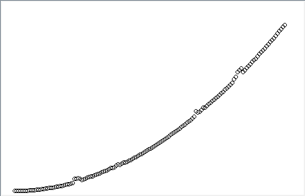
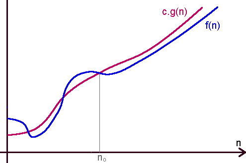

19. Úvod do analýzy algoritmov¶
Časová zložitosť
Budeme skúmať rôzne algoritmy z pohľadu ich rýchlosti behu pre rôzne veľké vstupné údaje. Už z programovania v tomto semestri máme nejaké skúsenosti, že niektoré programy sú pre veľké vstupy veľmi pomalé, niekedy sa dokonca ani nedočkáme výsledkov. Zatiaľ boli naše úvahy skôr intuitívne. Teraz sa zoznámime so základmi posudzovania časovej zložitosti rôznych skupín algoritmov.
Ukážeme to na riešení takejto úlohy: v danom číselnom zozname potrebujeme zistiť počet všetkých dvojíc rovnakých hodnôt. Pozrime si takéto jednoduché riešenie:
zoz = [2, 6, 7, 5, 4, 7, 8, 3, 1, 5, 9]
n = len(zoz)
pocet = 0
for i in range(n):
for j in range(i + 1, n):
if zoz[i] == zoz[j]:
pocet += 1
print(pocet)
Aký bude výsledok pre zoznam rovnakých hodnôt, napríklad pre zoz = [1, 1, 1, 1, 1]?
Poďme teraz odmerať, ako dlho bežal tento program. Urobíme to tak, ako sme to robili v predchádzajúcich témach. Jednou z možností je merať čas pre rôzne veľké náhodné zoznamy:
for n in range(1000, 10001, 1000):
zoz = [random.randrange(n) for i in range(n)]
tim = time.time()
pocet = 0
for i in range(n):
for j in range(i + 1, n):
if zoz[i] == zoz[j]:
pocet += 1
tim = time.time() - tim
print(n, round(tim, 3))
Z nameraných hodnôt môžeme nakresliť napríklad takýto graf:
{kind=link}

Zrejme si uvedomujete, že takéto merania nie sú presné, ale za to aspoň vidíme, ako tento odmeraný čas rastie. Možno by sme z týchto meraní vedeli nejako odhadnúť, ako sa bude tento program správať pre väčšie hodnoty premennej n, keďže si nemôžeme dovoliť niektoré algoritmy spúšťať pre väčšie vstupy.
Skúsme to preto urobiť inak. Program nebudeme spúšťať, len budeme počítať. Budeme počítať počet elementárnych inštrukcií, ktoré sa vykonajú pre zoznam veľkosti n. Mohli by sme nejako odhadnúť čas pre rôzne operácie, napríklad:
priradenie
aritmetická operácia
porovnávanie hodnôt
zaindexovanie prvku poľa
volanie funkcie
…
Pre pochopenie idey bude v našich príkladoch stačiť, keď budeme sledovať len priraďovacie príkazy, teda budeme počítať, koľko krát sa takéto priradenia vykonajú v závislosti od veľkosti vstupu (veľkosti zoznamu):
n = len(zoz)
pocet = 0
for i in range(n):
for j in range(i + 1, n):
if zoz[i] == zoz[j]:
pocet += 1
Vnútorný for-cyklus sa bude vykonávať najprv. pre i=0, potom pre i=1, potom pre i=2, atď. až naposledy pre i=n-1, teda prvýkrát pôjde n-2 krát, potom n-3 krát, … až 1-krát. Spolu je to súčet: 1 + 2 + 3 + … + n-2, teda (n-1)*(n-2)/2. Budeme predpokladať najhorší prípad (časovo najnáročnejší), teda že priradenie sa vykoná pri každom prechode cyklu.
Celkový čas potom:
f(n) = (n-1)*(n-2)/2 + 2 = 0.5 * n**2 - 1.5 * n + 3
Takúto funkciu, ktorá vyjadruje časový odhad trvania nejakého konkrétneho algoritmu, budeme nazývať časová zložitosť. Pravdepodobne, keby sme nakreslili priebeh tejto funkcie, dostali by sme veľmi podobné výsledky ako graf v našich prvých meraniach.
V skutočnosti nás nebude zaujímať až taký presný vzorec (s nepresnými predpokladmi o trvaní jednotlivých inštrukcií), ale dôležitý bude charakter takejto funkcie, teda či rastie rýchlo, či rastie rovnako ako funkcia iného algoritmu, alebo či rastie pomalšie ako iná funkcia.
V prvom rade budeme zanedbávať všetky „nepodstatné“ konštanty. Na priebeh funkcie to nemá skoro žiaden vplyv. Tiež, ak sa nejaká funkcia skladá z viacerých členov, pričom jeden rastie rýchlejšie a iný pomalšie, tak ten pomalší tiež „zanedbáme“. Teda pre náš algoritmus je dôležité, že jeho časová zložitosť je kvadratická funkcia (rastie tak rýchlo, ako n**2).
Triedy funkcií veľké O( )¶
Funkcie časovej zložitosti budeme zaraďovať do tried. Každá z tried bude charakteristická nejakou funkciou, ktorá ju ohraničuje zhora.
Formálnejšie musí platiť:
funkcia
f(n)patrí do tej istej triedy akog(n), ak existuje číselná konštantac, že pre dosť veľkénplatíc * g(n) >= f(n)takúto triedu funkcií potom označujeme O(g(n)) (hovoríme trieda veľké O)
budeme hovoriť, že
f(n)patrí do O(g(n)), alebo ajf(n)je O(g(n))
Funkcii g(n) sa hovorí horný asymptotický odhad funkcie f(n).
Napríklad časová zložitosť nášho skúmaného programu je O(n**2).
Formálne
Pre dané dve funkcie f(n) (odhad počtu elementárnych inštrukcií algoritmu) a g(n) hovoríme, že f(n) je triedy O(g(n)), ak existujú také dve kladné konštanty c a n0, že pre každé n > n0 platí:
c * g(n) >= f(n)
Môžete si predstaviť, napríklad takto:
{kind=link}

Základné skupiny funkcií časovej zložitosti¶
V tomto kurze sa budeme stretávať len s týmito skupinami funkcií:
O(1) konštantná zložitosť
Algoritmus, ktorý nezávisí od veľkosti vstupu. Napríklad, ak chceme zistiť súčet radu čísel od 1 do n a poznáme na to vzorec:
def sucet(n):
return n * (n+1) // 2
O(log n) logaritmická zložitosť
Časová zložitosť je logaritmická funkcia, napríklad hľadanie prvku v utriedenom zozname algoritmom binárne vyhľadávanie:
def hladaj(hodnota, zoz):
od, do = 0, len(zoz)
while od <= do:
stred = (od + do) // 2
if zoz[stred] == hodnota:
return True
if zoz[stred] < hodnota:
od = stred + 1
else:
do = stred - 1
return False
Uvedomte si, že pri logaritmickej funkcii nemusíme špecifikovať základ logaritmov, nakoľko platí
logA n = logB n / logB A
pre ľubovoľné základy A a B (keďže hodnota logB A je konštanta).
O(n) lineárna zložitosť
Algoritmus, ktorého zložitosť rastie lineárne s veľkosťou vstupu. Napríklad, ak chceme zistiť súčet radu čísel od 1 do n a počítame to pomocou cyklu:
def sucet(n):
res = 0
for i in range(1, n+1):
res += i
return res
Ale tiež hľadanie hodnoty v neutriedenom zozname:
def hladaj(hodnota, zoz):
for prvok in zoz:
if prvok == hodnota:
return True
return False
O(n log n) zložitosť n * log n
Neskôr budeme vidieť, že najrýchlejšie algoritmy triedenia poľa s prvkami ľubovoľných typov má práve túto zložitosť. Dokonca ukážeme, že ani nemôže existovať algoritmus s lepšou zložitosťou.
O(n**2) kvadratická zložitosť
Časová zložitosť je kvadratická funkcia, napríklad bublinkové triedenie:
def tried(zoz):
for i in range(len(zoz)):
for j in range(len(zoz)-1):
if zoz[j] > zoz[j+1]:
zoz[j], zoz[j+1] = zoz[j+1], zoz[j]
O(n**3) kubická zložitosť
Algoritmy s touto zložitosťou sú zriedkavejšie ako kvadratické, ale uvidíme ich, napíklad pri riešení grafových úloh.
O(2**n) exponenciálna zložitosť
Veľmi často sú to algoritmy prehľadávania s návratom (backtracking), v ktorých prechádzame všetky vygenerované možnosti a vyberáme niektoré podľa nejakých kritérií. Najčastejšie sú to rekurzívne algoritmy.
Podobne ako pri logaritmických zložitostiach aj do tejto triedy patria funkcie s ľubovoľným základom.
O(n!) faktoriálová zložitosť
Napríklad rekurzívne vygenerovanie všetkých permutácií (naučime sa to v ďalšom semestri):
def generuj(i):
for j in range(n):
if not bolo[j]:
zoz[i] = j
bolo[j] = True
if i == n - 1:
print(zoz)
else:
generuj(i + 1)
bolo[j] = False
n = 3
zoz = [0] * n
bolo = [False] * n
generuj(0)
Porovnanie¶
Zrejme medzi týmito triedami zložitosti platí takýto vzťah:
Ako si zjednodušiť zisťovanie časovej zložitosti¶
postupnosť príkazov, v ktorej je každý O(1), má zložitosť O(1)
for-cyklus s n-prechodmi, ktorý vykonáva len O(1), má zložitosť O(n)
všeobecnejšie for-cyklus s n-prechodmi, ktorý vykonáva telo cyklu O(f), má zložitosť O(n * f)
while cyklus, ktorý znižuje (zvyšuje) nejakú testovanú premennú o konštantu, má zložitosť O(n * f), kde O(f) je telo cyklu, n je testovaná hodnota
while cyklus, ktorý delí nejakú testovanú premennú o konštantu (napríklad na polovicu), má zložitosť O(log n * f), kde O(f) je telo cyklu, n je testovaná hodnota
ak máme spolu dva algoritmy, pri ktorých sa druhý vykoná po skončení prvého, potom majú celkovú zložitosť O(f1 + f2)
rekurzívne funkcie majú často zložitosť rádovo porovnateľnú s počtom vygenerovaných výsledkov
Ukážme to na tomto príklade: pripomeňme si upravený insert-sort z minulej prednášky:
def insert_sort(zoz):
for i in range(1, len(zoz)): # O(n**2)
prvok = zoz[i] # O(1)
j = i-1 # O(1)
while j >= 0 and zoz[j] > prvok: # O(n)
zoz[j+1] = zoz[j] # O(1)
j -= 1 # O(1)
zoz[j+1] = prvok # O(1)
Všetky príkazy okrem cyklov sú zložitosti O(1). Keďže premenná while-cyklu j sa znižuje o 1 a jej rozsah je priamo úmerný n, zložitosť tohto while cyklu je O(n), čo je vlastne telo for-cyklu. For-cyklus je potom n krát telo O(n), t.j. tento algoritmus je O(n**2).
Cvičenie¶
Poznámka
riešenia úloh ulož do jedného súboru a odovzdaj na testovací server https://vektor.fmph.uniba.sk/
testovací server tieto ulohy nebude testovať, vyrieš a odovzdaj ich všetky
prvé tri riadky súboru s riešením musia obsahovať:
# 19. cvicenie # student: Janko Hrasko # datum: 4.12.2025
zrejme ako študenta uvedieš svoje meno.
v odovzdaných riešeniach nepoužívaj
global
Zisti, akú časovú zložitosť má tento algoritmus triedenia bubble sort:
def bubble_sort(p): b = True while b: b = False for i in range(len(p) - 1): if p[i] > p[i + 1]: p[i], p[i + 1] = p[i + 1], p[i] b = True
Ako sa zmení časová zložitosť tohto algoritmu, ak predpokladáme, že vstupný zoznam je utriedený vzostupne?
Nasledovný program využíva bublinkové triedenie z predchádzajúcej úlohy. Aká je jeho časová zložitosť? V premennej
pje nejaký neutriedený zoznam (napríklad zoznam čísel):for i in range(len(p)): bubble_sort(p):
Zisti časovú zložitosť týchto dvoch funkcií. Hoci sa líšia len v jednom znaku, majú veľmi rôznu zložitosť:
def test1(n): i, j = 1, 0 while i < n: j += i i += 1 return j def test2(n): i, j = 1, 0 while i < n: j += i i += i return j
Odmeraj čas behu oboch algoritmov z (3). Použi
time.time()a postupne meraj pren:10000,20000,40000,80000,160000, …,5120000. Asi bude vhodné pri meraní každé volanie vykonať viackrát, napríkladtest1zavolaj 100 krát atest210000 krát. Vypisované časy meraní by mali potvrdiť tvoj odhad zložitosti týchto funkcií. Môžeš využiť takúto schému merania času pomocou triedyOdmeraja pythonovského príkazuwith:import time class Odmeraj(): def __enter__(self): self.t = time.time() def __exit__(self, *p): print('odmerany cas', round(time.time()-self.t, 4)) def sucet(n): res = 0 for i in range(1, n+1): res += i return res for n in range(1000000, 10000001, 1000000): print('pre n =', n, '***', end=' ') with Odmeraj(): sucet(n)
Odmeraj čas štandardnej funkcie
sorted()pre rôzne veľké vstupy (napríklad10000,20000,30000,40000, …). Ak predpokladáme, že zložitosť tejto funkcie je O(n log n), odmerané časy by to mali nejako preukázať. Použi náhodne vygenerované zoznamy.
Triedenie insert sort môže byť zapísaný aj takto bez funkcie
vymen:def sort1(zoz): for i in range(1, len(zoz)): t, j = zoz[i], i - 1 while j >= 0 and zoz[j] > t: zoz[j + 1] = zoz[j] j -= 1 zoz[j + 1] = t
Zisti, pre aký najväčší n-prvkový zoznam triedenie na tvojom počítači beží 1 sekundu, 2 sekundy a 3 sekundy. Zoznamy generuj s náhodnými hodnotami. Hľadanie takýchto
nskús nejako zautomatizovať.
Napíš druhú verziu tohto triedenia, v ktorom sa zaraďovanie prvku na správne miesto utriedenej časti zoznamu použije metóda
list.insert()a vyhodenie prvku pomocoudel:def sort2(zoz): ...
Zisti, aký najväčší n-prvkový zoznam sa dá teraz utriediť za 1 sekundu, za 2 sekundy, za 3 sekundy.
Zisti, akú časovú zložitosť majú tieto dva algoritmy. V premennej
pje nejaký zoznam čísel:def test3(p): i = 1 while i < len(p): sorted(p) i += i return p def test4(p): i, n = 1, len(p) while i < n: if 2 * i >= n: sorted(p) i += i return p
Svoj predpoklad o časovej zložitosti prekontroluj s rôzne veľkými náhodnými zoznamami.
Zisti, aká je časová zložitosť týchto algoritmov:
# zisťuje akýsi súčet i, j = 1, 1 sum = 0 while i < n: sum += i * j i = 10 * i j = (j + 1) % 10 print(sum) # rekurzívny výpočet def f(n): if n <= 1: return 1 return f(n // 2) + f(n // 2) # rekurzívny výpočet - to isté ako predchádzajúci príklad, ale máličko inak def f(n): if n <= 1: return 1 return 2 * f(n // 2) # ešte jeden cyklus f = 1 while 2 * f <= n: f *= 2 print(f) # rozklad čísla na prvočinitele def rozklad(n): i = 2 while n > 1: if n % i == 0: n = n // i else: i += 1
11. Týždenný projekt¶
Poznámka
riešenie úlohy ulož do textového súboru s príponou
.pya odovzdaj na testovací server https://vektor.fmph.uniba.sk/ najneskôr 21.decembra do 18:00.prvé tri riadky súboru s riešením musia obsahovať:
# 11. tyzdenny projekt # student: Janko Hrasko # datum: 7.12.2025
zrejme ako študenta uvedieš svoje meno, dátum uprav podľa dátumu odovzdania
nepoužívaj
importaniglobal
Skákajúci robot
Vysokoškoláci na predmete Úvod do robotiky chceli vyrobiť skákajúci robot, ktorý sa v testovacej miestnosti pohybuje podľa zadaných povelov, pričom sa na prekážke alebo okraji miestnosti zastaví a spracováva ďalší povel. Okrem obyčajného presúvania sa na susedné políčko miestnosti, robot dokáže preskočiť nejaký zadaný počet políčok, na ktorých môžu byť aj prekážky. Dôležité je, aby políčko, na ktoré má takto doskočiť, bolo bez prekážky a samozrejme nie mimo rozmer miestnosti. Študenti potrebujú zistiť, ktoré políčka v testovanej miestnosti robot pri svojej prechádzke navštívil, prípadne koľkokrát cez ne prešiel (na ne doskočil).
Aby mohli robota čo najlepšie otestovať, do testovanej miestnosti (sieť štvorcových políčok) postavili niekoľko radov prekážok (kartónových škatúľ). Pri kladení škatúľ postupovali takto:
buď kládli škatule na zadané políčka (zadali riadok a stĺpec políčka miestnosti)
alebo položili niekoľko radov s rovnakým počtom škatúľ (vyplnili obdĺžnik políčok) - teraz zadali riadky a stĺpce takéhoto obdĺžnika
Plán testovacej miestnosti aj s prekážkami môže v súbore vyzerať, napríklad takto 'subor1.txt':
1 3
2 3 5 7
0 6
5 10
kde
v poslednom riadku je rozmer štvorcovej siete miestnosti: počet riadkov a stĺpcov (teda 5 x 10)
v každom riadku okrem posledného je buď dvojica čísel pre polohu (riadok, stĺpec) jednej škatule alebo štvorica čísel, ktorá popisuje obdĺžnikovú oblasť (riadok1, riadok2, stĺpec1, stĺpec2)
napríklad štvorica
2 3 5 7označuje oblasť od 2. do 3. riadku a v každom je to 5. až 7. stĺpec
Napíš metódy triedy Robot:
class Robot:
def __init__(self, meno_suboru):
...
def __repr__(self):
return ''
def daj_robot(self):
return ...
def zmen_robot(self, poloha):
...
robot = property(daj_robot, zmen_robot)
def poloz(self, *poloha):
...
def pohyb(self, prikazy):
return ...
kde metódy:
init(meno_suboru)- prečíta súbor s plánom miestnosti; pozícia robota je zatiaľNone__repr__()- vráti znakový reťazec, ktorý reprezentuje stav miestnosti aj so zaznačenými počtami navštívených políčokešte nenavštívené políčka zobrazí ako
'.'a prekážky ako'#'každé políčko plochy zobrazuje na šírku 2 znakov, pričom, ak by navštívené počty presiahli 99, tak zobrazuje len posledné cifry tohto čísla (teda modulo 100)
pozícia robota sa zobrazí znakom
'R'
atribút
robotrealizuj akopropertys pomocnými metódamidaj_robotazmen_robotparameter
polohaje dvojica čísel(riadok, stĺpec)a určuje pozíciu robota v plochepri každom položení robota do plochy sa zvýši o
1počítadlo navštíveného políčkazrejme robota budeme klásť len na políčko bez prekážky
poloz(*poloha)na zadanú pozíciu v miestnosti položí prekážkupoloha sú buď dve čísla
riadok, stĺpec, alebo štyririadok1, riadok2, stĺpec1, stĺpec2, ktorá popisuje obdĺžnikovú oblasť s prekážkami
pohyb(prikazy)- dostane postupnosť príkazov pre skákajúci robot, ktoré sú jedným z'p'(ide vpravo),'d'(ide dolu),'l'(ide vľavo),'h'(ide hore)robot sa v zadanom smere pohne o jedno políčko (ak tam nie je prekážka ani okraj miestnosti)
ak je pred príkazom celé číslo (môže byť aj viacciferné), toto vyjadruje, koľko políčok pri svojom pohybe robot preskočí
napríklad
2poznačuje, že robot má preskočiť2políčka vpravo a skočiť na prázdne políčko, ktoré je tretie od momentálnej polohyzrejme tento skákací príkaz môže vykonať len vtedy, keď nevypadne z miestnosti a na cieľovom políčku nie je prekážka
funkcia vráti počet naozaj prejdených krokov, resp. políčok, na ktoré sa skočilo (nie tie, nad ktorými sa letelo pri skoku)
metóda ignoruje znaky, ktoré nie sú jedným zo štyroch príkazov ani číslice
Napríklad, takýto test:
if __name__ == '__main__':
r = Robot('subor1.txt')
print(r)
r.robot = 1, 2
print(f'{r.pohyb('3p2dl3h1p') = }')
print(r)
print('pozicia robota =', r.robot)
print(f'{r.pohyb('dl2dp2hhp') = }')
print(r)
print(f'{r.poloz(1, 4, 1, 3) = }')
print(f'{r.poloz(0, 5) = }')
print(r)
print(f'{r.pohyb('1d3l3l') = }')
print(r)
vypíše:
. . . . . . # . . .
. . . # . . . . . .
. . . . . # # # . .
. . . . . # # # . .
. . . . . . . . . .
r.pohyb('3p2dl3h1p') = 5
. . . . . 1 # R . .
. . 1 # . . 1 . . .
. . . . . # # # . .
. . . . . # # # . .
. . . . . 1 1 . . .
pozicia robota = (0, 7)
r.pohyb('dl2dp2hhp') = 7
. . . . . 1 # 2 R .
. . 1 # . . 2 2 . .
. . . . . # # # . .
. . . . . # # # . .
. . . . . 1 2 1 . .
r.poloz(1, 4, 1, 3) = None
r.poloz(0, 5) = None
. . . . . # # 2 R .
. # # # . . 2 2 . .
. # # # . # # # . .
. # # # . # # # . .
. # # # . 1 2 1 . .
r.pohyb('1d3l3l') = 3
. . . . . # # 2 1 .
. # # # . . 2 2 . .
R # # # 1 # # # 1 .
. # # # . # # # . .
. # # # . 1 2 1 . .
Môžeš si stiahnuť 1tp11.zip s testovacími súbormi 'subor1.txt', 'subor2.txt', 'subor3.txt', …, ktoré bude používať testovač.